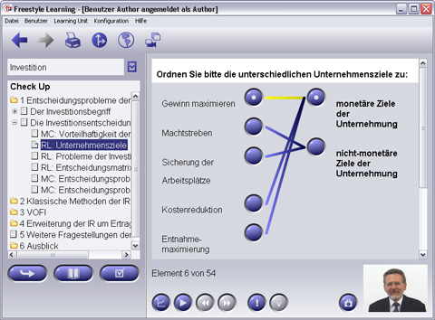

Bei der Auswahl eines Relator Elementes im Strukturbaum wird eine Frage oder andere Instruktionen im Kopf des Anzeigebereichs angezeigt. Darunter werden links und rechts zahlreiche Symbole präsentiert. Ihre Aufgabe ist es, die Symbole auf der linken mit den richtigen Symbolen auf der rechten Seite zu verbinden. Dazu klicken Sie zunächst auf das linke, anschliessend auf das rechte Symbol. Die Verbindung zwischen den beiden Symbolen wird durch eine gelbe Linie angezeigt. Um eine Verbindung aufzuheben, klicken Sie zunächst auf das linke, dann auf das rechte Symbol. Die gelbe Linie wird dann wieder entfernt und die Verbindung ist aufgehoben.

Durch einen Klick auf die "Hinweis"-Schaltfläche in der Interaktionsleiste erhalten Sie einen Tip durch den Autor.
Zusätzliche View-spezifische Interaktions-Schaltflächen (nur im Übungsmodus)
|
Grafischer Hinweis | Grafischen Hinweis oder Kommentar des Autors anzeigen lassen |
|
Audio- / Video-Hinweis | Hinweis oder Kommentar des Autors anhören oder ansehen (wenn vom Autor aktiviert) |
Zurück zur Hauptseite